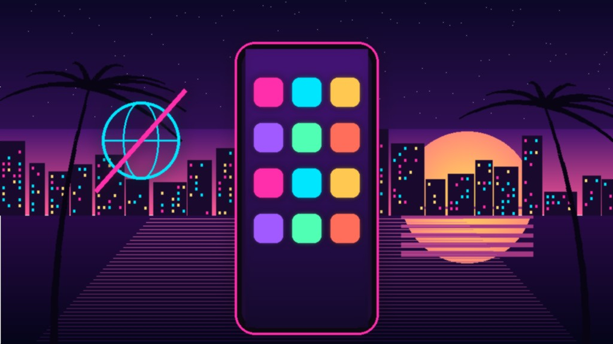

Fictional internet
Does GTA 6 Have Websites? | Peekhole

Short answer: No. GTA 6 has no in-game websites or web browser. Rockstar swapped the old fictional internet for phone apps and social media feeds.
Wait, what happened to the internet?
In GTA 4 and GTA 5 you could kill hours on a fake web, from parody social networks to online car and property shops. In GTA 6 the phone is the whole show. Rockstar's head of development, Rob Nelson, told Kotaku in an interview published November 18, 2026, that websites "didn't feel necessary" and the team chose to "lean into apps" instead.
Why did Rockstar cut it?
Kotaku says the team wanted you out in Leonida doing things, not shopping from a menu. Nelson also said it wasn't an order from the top. He asked Rockstar's head of 2D and UI, Stu Petri, about websites, and Petri basically asked what they were even for. Debate over.
So what's on the phone?
Apps and social feeds. Rockstar's trailers leaned hard on vertical, social-style clips, and you can scroll feeds in the game. We covered the confirmed ones in What Phone Apps Are in GTA 6?
Could websites come back?
Maybe someday. Kotaku and TheGamer say Nelson left the door open for future games. Nobody has said anything about adding them to GTA 6 in an update, so don't hold your breath for a reboot of the old fake web.
Honestly, it's fitting. Real people barely type web addresses anymore either. Leonida just doomscrolls like the rest of us.
Sources
- Kotaku: The web is dead in GTA 6, 'It didn't feel necessary for us'
- TheGamer: GTA 6 doesn't have the internet because it wasn't necessary
- GamingBolt: GTA 6 doesn’t have websites
Peekhole take: No fake web in Leonida? Fine. The real one still has plenty of places worth peeking at.